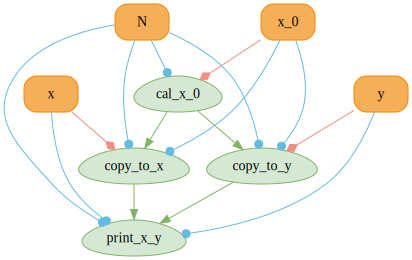
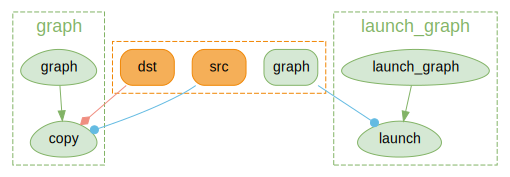
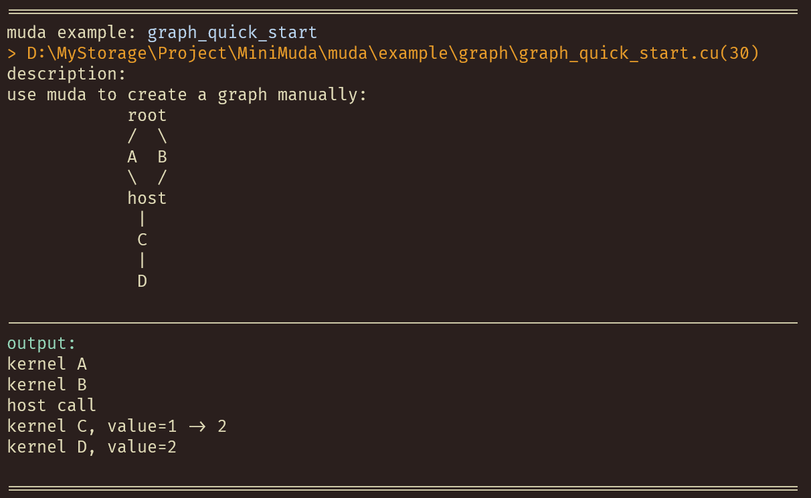
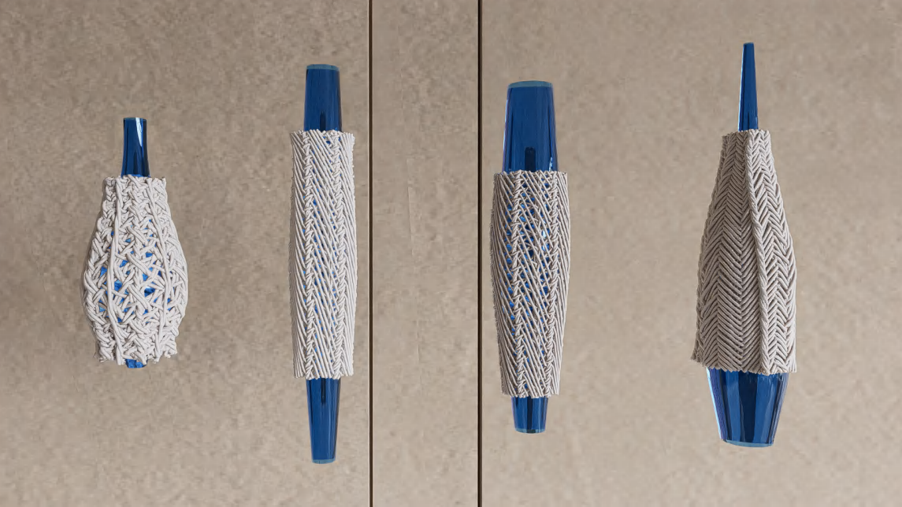
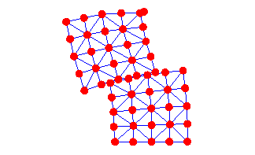

Home
Introduction
MUDA is μ-CUDA, yet another painless CUDA programming paradigm.
COVER THE LAST MILE OF CUDA
What is muda?
- Header-only library right out of the box
- Depends only on CUDA and standard libraries
- Improve readability, maintainability, security, and debugging efficiency of CUDA code.
- Reduce the difficulty of building CUDA Graphs and increase automation.
Why muda?
Think that you wanna try a new idea or implement a demo with CUDA. If the demo works well, you want to embed it into your project quickly. But you find that using CUDA directly will be a catastrophic disaster.
Coding with C-API CUDA, you will be buried in irrelevant details, and the information density of the code is very low, which means that you need to write a lot of redundant code to achieve a simple function. Less is more, right?
Debugging the GPU code is a nightmare. How much time do you spend on those weird Error Codes from CUDA, and finally find it's an illegal memory access?
Using a GPU Debugger when something goes wrong may be an approach. But the best way is to prevent bugs from happening, right? Most of the time, automatic range checking is all we want. It's a pretty fantasy that someone tells you, "Hey Bro, at Block 103, Thread 45, in kernel named set_up_array, the buffer named array goes out of range because your index is 100 while the array size is 96." After that, it exits the kernel and stops the program for you to prevent later chained dummy bugs from producing confusing debug information.
It is muda!
If you access memory resource using a MUDA Viewer. Dear muda will tell you all about that.
MUDA also provides an elegant way to create and update CUDA Graph, called MUDA ComputeGraph.
- Users almost take only a bit of effort to switch from the Stream-Base Launch Mode to Graph Launch Mode.
- Updating the node parameters and shared resources in CUDA Graphs becomes intuitive, safe, and efficient.
Simple to extend.
- User can obey the primary interface of muda to define their own object to reuse the MUDA facility
- Almost all "Resource View Type" can be used directly in the MUDA
ComputeGraph.
A substitution of thrust?
Nop! MUDA is a supplement of thrust!
Thrust is a C++ template library for CUDA based on the Standard Template Library (STL). Thrust allows you to implement high-performance parallel applications with minimal programming effort through a high-level interface that is fully interoperable with CUDA C.
Using iterators to prevent range error is a high-level approach. However, we still need to access the memory manually in our own kernel, no matter whether using raw cuda kernel launch <<<>>> or using thrust agent kernel (most of the time, using a thrust::counting_iterator in a thrust::for_each algorithm).
So, I think MUDA is a mid-level approach. We have the same purpose but different levels and aim at different problems. Feel comfortable to use them together!
Here is an example for using Thrust and MUDA together.
using namespace muda;
using namespace thrust;
constexpr auto N = 10;
DeviceVector<float> x(N); // DeviceVector is derived from thrust::device_vector
KernelLabel label{"thrust"}; // give a kernel label for better debug info
// equivalent to parallel for
for_each(thrust::cuda::par_nosync, // no sync after execution
make_counting_iterator(0), make_counting_iterator(N), // make a sequence from 0 -> N
[x = x.viewer().name("x")] __device__(int i) mutable
{
x(i) = i; // safe access through muda viewer
});
Overview
This is a quick overview of some muda APIs.
You can check it to find out something useful for you. A comprehensive description of MUDA is placed at Tutorial.
Launch
Simple, self-explanatory, intellisense-friendly Launcher.
#include <muda/muda.h>
using namespace muda;
__global__ void raw_kernel()
{
printf("hello muda!\n");
}
int main()
{
// just launch
Launch(1, 1)
.apply(
[] __device__()
{
print("hello muda!\n");
}).wait();
constexpr int N = 8;
// dynamic grid
ParallelFor(256 /*block size*/)
.apply(N,
[] __device__(int i)
{
print("hello muda %d!\n", i);
}).wait();
// grid stride loop
ParallelFor(8 /*grid size*/,
32 /*block size*/)
.apply(N,
[] __device__(int i)
{
print("hello muda %d!\n", i);
}).wait();
// automatic block size choosing
ParallelFor().apply(N,
[] __device__(int i)
{
print("hello muda %d!\n", i);
}).wait();
// intellisense-friendly wrapper
Kernel{32/*grid size*/, 64/*block size*/,0/*shared memory*/, stream, other_kernel}(...)
}
Logger
A std::cout like output stream with overload formatting.
Logger logger;
Launch(2, 2)
.apply(
[logger = logger.viewer()] __device__() mutable
{
// type override
logger << "int2: " << make_int2(1, 2) << "\n";
logger << "float3: " << make_float3(1.0f, 2.0f, 3.0f) << "\n";
})
.wait();
// download the result to any ostream you like.
logger.retrieve(std::cout);
You can define a global__device__ LoggerViewer cout and call the overloaded constructor Logger(LoggerViewer* global_viewer) to use it without any capturing, which is useful when you need to use logger in some function but don't want to put the LoggerViewer in the function parameter.
namespace foo
{
__device__ LoggerViewer cout;
__device__ void say_hello() { cout << "hello global logger!\n"; }
}
int main()
{
// setup global logger
LoggerViewer* viewer_ptr = nullptr;
checkCudaErrors(cudaGetSymbolAddress((void**)&viewer_ptr, foo::cout));
Logger logger(viewer_ptr);
Launch().apply([]__device__() mutable
{
foo::say_hello();
})
.wait();
logger.retrieve(std::cout);
}
Further, you can use muda::Debug::set_sync_callback() to retrieve the output once wait() is called, as:
__device__ LoggerViewer cout;
int main()
{
// setup global logger
LoggerViewer* viewer_ptr = nullptr;
checkCudaErrors(cudaGetSymbolAddress((void**)&viewer_ptr, foo::cout));
Logger logger(viewer_ptr);
muda::Debug::set_sync_callback([&] { logger.retrieve(std::cout); });
Launch().apply([]__device__() mutable
{
cout << "hello\n";
})
.wait();
// no need to retrieve manully
}
Buffer
A lightweight std::vector-like cuda device memory container.
In addition, 2D/3D aligned buffers are also provided.
DeviceBuffer<int> buffer;
// copy from std::vector
std::vector<int> host(8);
buffer.copy_from(host);
// copy to raw memory
int host_array[8];
buffer.copy_to(host_array);
// use BufferView to copy sub-buffer
buffer.view(0,4).copy_from(host.data());
DeviceBuffer<int> dst_buffer{4};
// use BufferView to copy sub-buffer
buffer.view(0,4).copy_to(dst_buffer.view());
// safe and easy resize
DeviceBuffer2D<int> buffer2d;
buffer2d.resize(Extent2D{5, 5}, 1);
buffer2d.resize(Extent2D{7, 2}, 2);
buffer2d.resize(Extent2D{2, 7}, 3);
buffer2d.resize(Extent2D{9, 9}, 4);
// subview
buffer2d.view(Offset2D{1,1}, Extent2D{3,3});
buffer2d.copy_to(host);
DeviceBuffer3D<int> buffer3d;
buffer3d.resize(Extent3D{3, 4, 5}, 1);
buffer3d.copy_to(host);
The old data will be safely kept if you resize a 2D or 3D buffer. If you don't want to keep the old data, use .clear() before your .resize(). The result of the above chain of 2D buffer resizing is shown below.
Viewer In Kernel
MUDA Viewers provide safe inner-kernel memory access, which checks all input to ensure access does not go out of range and does not dereference a null pointer. If something goes wrong, they report the debug information as much as possible and trap the kernel to prevent further errors.
You can fill out the name of a viewer and kernel_name or `file_line of a Launcher to get more readable debug information. These information only be removed in the release version.
DeviceVar<int> single;
DeviceBuffer<int> array;
DeviceBuffer2D<int> array2d;
DeviceBuffer3D<int> array3d;
Logger logger;
Launch()
.kernel_name(__FUNCTION__)
.file_line(__FILE__, __LINE__)
.apply(
[
single = single.viewer().name("single"), // give a name for more readable debug info
array = buffer.viewer().name("array"),
array2d = buffer_2d.viewer().name("array2d"),
array3d = buffer_3d.viewer().name("array3d"),
logger = logger.viewer(),
...
] __device__ () mutable
{
single = 1;
array(i) = 1;
array2d(offset_in_height, offset_in_width) = 1;
array3d(offset_in_depth, offset_in_height, offset_in_width) = 1;
logger << 1;
});
Event And Stream
If you don't want to launch something on the default stream, use Stream to create async streams. And you can use Event to synchronize between streams.
Stream s1, s2;
Event set_value_done;
DeviceVar<int> v = 1;
on(s1)
.next<Launch>(1, 1)
.apply(
[v = v.viewer()] __device__() mutable
{
int next = 2;
v = next;
})
.record(set_value_done)
.apply(
[] __device__()
{
some_work();
});
on(s2)
.when(set_value_done)
.next<Launch>(1, 1)
.apply([v = v.viewer()] __device__()
{ int res = v; });
Asynchronous Operation
MUDA Launchers' functions are Asynchronous, meaning we need to call .wait() to synchronize it on the host, unlike some APIs such as BufferView::copy_fom. NOTE: Operations of a Launcher will be asynchronous as possible, so you should synchronize the stream by yourself, while other APIs will synchronize themselves.
// kernel launch
Kernel{..., f}(...);
Launch(stream).apply(...).wait();
ParallelFor(stream).apply(N, ...).wait();
// graph launch
GraphLaunch().launch(graph).wait();
// Memory
Memory(stream).copy(...).wait();
Memory(stream).set(...).wait();
// Buffer: for BufferView/Buffer2DView/Buffer3DView
BufferLaunch(stream).copy(BufferView, ...).wait();
BufferLaunch(stream).fill(BufferView,...).wait();
Feel free to ignore Memory BufferLaunch Launcher when building your fast demo. Directly use the convenient synchronous APIs of DeviceBuffer/BufferView until you find it's the performance hotpot that will save you a lot of time.
It's a good practice to keep Launchers asynchronous while keeping other APIs synchronous, which obeys the 80/20 rule.
[Extension] Linear System Support
MUDA supports basic linear system operations. e.g.:
- Sparse Matrix Format Conversion
- Sparse Matrix Assembly
- Linear System Solving

The only thing you need to do is to declare a muda::LinearSystemContext. Note: LinearSystemContext is a relative heavy resource, so you should keep and reuse it as much as possible.
LinearSystemContext ctx;
// non-unique triplets of (row_index, col_index, block3x3)
DeviceTripletMatrix<float, 3> A_triplet;
// setup the triplet matrix dimension
A_triplet.reshape(block_rows,block_cols);
// resize the triplets, we should know the total count of the triplets.
A_triplet.resize_triplets(hessian_count);
// unique triplets of (row_index, col_index, block3x3) faster SPMV than TripletMatrix
DeviceBCOOMatrix<float,3> A_bcoo;
// block compressed sparse row format, faster SPMV than BCOOMatrix
DeviceBSRMatrix<float,3> A_bsr;
// compressed sparse row format, slower SPMV than BSRMatrix
DeviceCSRMatrix<float,3> A_csr
// trivial dense matrix
DeviceDenseMatrix<float> A_dense;
// convert:
ctx.convert(A_triplet, A_bcoo);
ctx.convert(A_bcoo, A_bsr);
ctx.convert(A_bsr, A_dense);
ctx.convert(A_bsr, A_csr);
ctx.convert(A_bcoo, A_dense);
// so for the Sparse Vector ...
We only allow users to assemble a Sparse Matrix from Triplet Matrix. And allow users to read from BCOOMatrix.
To assemble a Triplet Matrix, user need to use the viewer of a Triplet Matrix.
DeviceTripletMatrix<float, 3> A_triplet;
A_triplet.resize(block_rows,block_cols,hessian_count);
DeviceDenseVector<float> x, b;
x.resize(block_rows * 3);
b.resize(block_rows * 3)
ParallelFor(256/*block size*/)
.apply(hessian_count,
[
H = A_triplet.viewer().name("Hessian"),
g = x.viewer().name("gradient")
// some infos to build up hessian and gradient
] __device__(int i)
{
int row, col;
Eigen::Matrix3f hessian; // fill the local hessian, using your infos
Eigen::Vector3f gradient;
// write the (row, col, hessian) to the i-th triplet
H(i).write(row,col, hessin);
// atomic add the gradient vector
g.segment<3>(row * 3).atomic_add(gradient);
}).wait();
// convert to bcoo for better performance on SPMV.
ctx.convert(A_triplet, A_bcoo);
ctx.convert(A_bcoo, A_bsr);
// maybe in some iterative solver:
ctx.spmv(A_bsr.cview(), x.cview(), b.view());
[Extension] Field Layout
MUDA now supports the SoA/AoS/AoSoA layouts. Users can switch between them seamlessly(with different builder parameters). The copy operation in all directions and layouts is well-supported.
Most of the time, AoSoA is the best layout for Vector and Matrix, with better memory coalescing and more compact memory storage. With the help of Eigen::Map<>, the read/write of a Vector/Matrix is as trivial as accessing a struct-version Vector/Matrix.
Here is a simple example of muda::Field.
#include <muda/ext/field.h> // all you need for muda::Field
void field_example(FieldEntryLayout layout)
{
using namespace muda;
using namespace Eigen;
Field field;
// create a subfield called "particle"
// any entry in this field has the same size
auto& particle = field["particle"];
float dt = 0.01f;
// build the field:
// auto builder = particle.AoSoA(); // compile time layout
auto builder = particle.builder(FieldEntryLayout::AoSoA); // runtime layout
auto& m = builder.entry("mass").scalar<float>();
auto& pos = builder.entry("position").vector3<float>();
auto& pos_old = builder.entry("position_old").vector3<float>();
auto& vel = builder.entry("velocity").vector3<float>();
auto& force = builder.entry("force").vector3<float>();
// matrix is also supported, but in this example we don't use it
auto& I = builder.entry("inertia").matrix3x3<float>();
builder.build(); // finish building the field
// set size of the particle attributes
constexpr int N = 10;
particle.resize(N);
Logger logger;
ParallelFor(256)
.kernel_name("setup_vars")
.apply(N,
[logger = logger.viewer(),
m = m.viewer(),
pos = pos.viewer(),
vel = vel.viewer(),
f = force.viewer()] __device__ (int i) mutable
{
m(i) = 1.0f;
// a row of particles with position=(i,1,0)
pos(i) = Vector3f::UnitY() + Vector3f::UnitX() * i;
vel(i) = Vector3f::Zero();
f(i) = Vector3f{0.0f, -9.8f, 0.0f};
logger << "--------------------------------\n"
<< "i=" << i << "\n"
<< "m=" << m(i) << "\n"
<< "pos=" << pos(i) << "\n"
<< "vel=" << vel(i) << "\n"
<< "f=" << f(i) << "\n";
})
.wait();
logger.retrieve();
ParallelFor(256)
.kernel_name("integration")
.apply(N,
[logger = logger.viewer(),
m = m.cviewer(),
pos = pos.viewer(),
vel = vel.viewer(),
f = force.cviewer(),
dt] __device__ (int i) mutable
{
auto x = pos(i);
auto v = vel(i);
Vector3f a = f(i) / m(i);
v = v + a * dt;
x = x + v * dt;
logger << "--------------------------------\n"
<< "i=" << i << "\n"
<< "m=" << m(i) << "\n"
<< "pos=" << pos(i) << "\n"
<< "vel=" << vel(i) << "\n"
<< "f=" << f(i) << "\n";
})
.wait();
logger.retrieve();
// copy between entry and host
std::vector<Vector3f> positions;
pos.copy_to(positions);
pos.copy_from(positions);
// copy between entries
pos_old.copy_from(pos);
// copy between buffer and entry
DeviceBuffer<Vector3f> pos_buf;
pos.copy_to(pos_buf);
pos.copy_from(pos_buf);
// using cub to do reduction on any format
DeviceVar<float> total_mass;
DeviceReduce().Sum(m.view(), total_mass.view(), m.count());
}
Additionally, resizing a subfield will resize all the entries, and the resizing is safe; all entries will be copied to a new buffer if the new size exceeds the capacity.
It'd be useful if the topology will change in your simulation. For example, the fracture simulation always changes its tetrahedron mesh, and all attributes of particles, edges, triangles, and tetrahedra will change correspondently. It will be terrible if you resize all the attributes yourself.
Note that every FieldEntry has a View called FieldEntryView. A FieldEntryView can be regarded as a ComputeGraphVar(see below), which means FieldEntry can also be used in ComputeGraph.
Compute Graph
Define MUDA_WITH_COMPUTE_GRAPH to turn on Compute Graph support.
MUDA can generate cudaGraph nodes and dependencies from your eval() call. And the cudaGraphExec will be automatically updated (minimally) if you update a muda::ComputeGraphVar. More details in zhihu_ZH.
Define a muda compute graph:
void compute_graph_simple()
{
ComputeGraphVarManager manager;
ComputeGraph graph{manager};
// 1) define GraphVars
auto& N = manager.create_var<size_t>("N");
// BufferView represents a fixed range of memory
// dynamic memory allocation is not allowed in GraphVars
auto& x_0 = manager.create_var<BufferView<Vector3>>("x_0");
auto& x = manager.create_var<BufferView<Vector3>>("x");
auto& y = manager.create_var<BufferView<Vector3>>("y");
// 2) create GraphNode
graph.create_node("cal_x_0") << [&]
{
// initialize values
ParallelFor(256).apply(N.eval(),
[x_0 = x_0.eval().viewer()] __device__(int i) mutable
{ x_0(i) = Vector3::Ones(); });
};
graph.create_node("copy_to_x") // copy
<< [&] { BufferLaunch().copy(x.eval(), x_0.ceval()); };
graph.create_node("copy_to_y") // copy
<< [&] { BufferLaunch().copy(y.eval(), x_0.ceval()); };
graph.create_node("print_x_y") << [&]
{
// print
ParallelFor(256).apply(N.eval(),
[x = x.ceval().cviewer(),
y = y.ceval().cviewer(),
N = N.eval()] __device__(int i) mutable
{
if(N <= 10)
print("[%d] x = (%f,%f,%f) y = (%f,%f,%f) \n",
i,
x(i).x(),
x(i).y(),
x(i).z(),
y(i).x(),
y(i).y(),
y(i).z());
});
};
// 3) visualize it using graphviz (for debug)
graph.graphviz(std::cout);
}

Launch a muda compute graph:
void compute_graph_simple()
{
// resources
auto N_value = 4;
auto x_0_buffer = DeviceVector<Vector3>(N_value);
auto x_buffer = DeviceVector<Vector3>(N_value);
auto y_buffer = DeviceVector<Vector3>(N_value);
N.update(N_value);
x_0.update(x_0_buffer);
x.update(x_buffer);
y.update(y_buffer);
// create stream
Stream stream;
// sync graph on stream
graph.launch(stream);
// launch all nodes on a single stream (fallback to origin cuda kernel launch)
graph.launch(true, stream);
}
Dynamic Parallelism
MUDA support dynamic parallelism based on MUDA ComputeGraph.
void dynamic_parallelism_graph()
{
std::vector<int> host(16);
std::iota(host.begin(), host.end(), 0);
ComputeGraphVarManager manager;
// create graph
ComputeGraph graph{manager, "graph", ComputeGraphFlag::DeviceLaunch};
// create resource
DeviceBuffer<int> src = host;
DeviceBuffer<int> dst(host.size());
// create graph var
auto& src_var = manager.create_var("src", src.view());
auto& dst_var = manager.create_var("dst", dst.view());
// create graph node
graph.$node("copy")
{
BufferLaunch().copy(dst_var, src_var);
};
// build graph
graph.build();
// create a scheduler graph
ComputeGraph launch_graph{manager, "launch_graph", ComputeGraphFlag::DeviceLaunch};
auto& graph_var = manager.create_var("graph", graph.viewer());
// create a node to launch our graph
launch_graph.$node("launch")
{
Launch().apply(
[graph = graph_var.ceval()] $()
{
graph.tail_launch();
});
};
// graphviz all graph we created
manager.graphviz(std::cout);
// launch and wait
launch_graph.launch().wait();
}

MUDA vs. CUDA
/*
* muda style
*/
void muda()
{
DeviceBuffer<int> dv(64);
dv.fill(1);
ParallelFor(256) // parallel-semantic
.kernel_name("my_kernel") // or just .kernel_name(__FUNCTION__)
.apply(64, // automatically cover the range
[
// mapping from the DeviceBuffer to a proper viewer
// which can be trivially copy through device and host
dv = dv.viewer().name("dv")
]
__device__(int i) mutable
{
dv(i) *= 2; // safe, the viewer check the boundary automatically
})
.wait();// happy waiting, muda remember the stream.
//.apply(...) //if you want to go forward with the same config, just call .apply() again.
}
/*
* cuda style
*/
// manually create kernel
__global__ void times2(int* i, int N) // modifying parameters is horrible
{
auto tid = threadIdx.x;
if(tid < N) // check corner case manaully
{
i[tid] *= 2;// unsafe: no boundary check at all
}
}
void cuda()
{
// to be brief, we just use thrust to allocate memory
thrust::device_vector<int> dv(64, 1);
// cast to raw pointer
auto dvptr = thrust::raw_pointer_cast(dv.data());
// create stream and check error
cudaStream_t s;
checkCudaErrors(cudaStreamCreate(&s));
// call the kernel (which always ruins the Intellisense, if you use VS.)
times2<<<1, 64, 0, s>>>(dvptr, dv.size());
// boring waiting and error checking
checkCudaErrors(cudaStreamSynchronize(s));
}
Build
Cmake
Xmake
Run example:
To show all examples: Play all examples:Copy Headers
Because muda is header-only, copy the src/muda/ folder to your project, set the include directory, and everything is done.
Macro
| Macro | Value | Details |
|---|---|---|
MUDA_CHECK_ON |
1(default) or 0 |
MUDA_CHECK_ON=1 for turn on all muda runtime check(for safety) |
MUDA_WITH_COMPUTE_GRAPH |
1or0(default) |
MUDA_WITH_COMPUTE_GRAPH=1 for turn on muda compute graph feature |
If you manually copy the header files, don't forget to define the macros yourself. If you use cmake or xmake, just set the project dependency to muda.
Examples
All examples in muda/example are self-explanatory, enjoy it.

Contributing
Contributions are welcome. We are looking for or are working on:
-
muda development
-
fancy simulation demos using muda
-
better documentation of muda
Related Work
- Topological braiding simulation using muda (old version)
@article{article,
author = {Lu, Xinyu and Bo, Pengbo and Wang, Linqin},
year = {2023},
month = {07},
pages = {},
title = {Real-Time 3D Topological Braiding Simulation with Penetration-Free Guarantee},
volume = {164},
journal = {Computer-Aided Design},
doi = {10.1016/j.cad.2023.103594}
}

- solid-sim-muda: a tiny solid simulator using muda.
